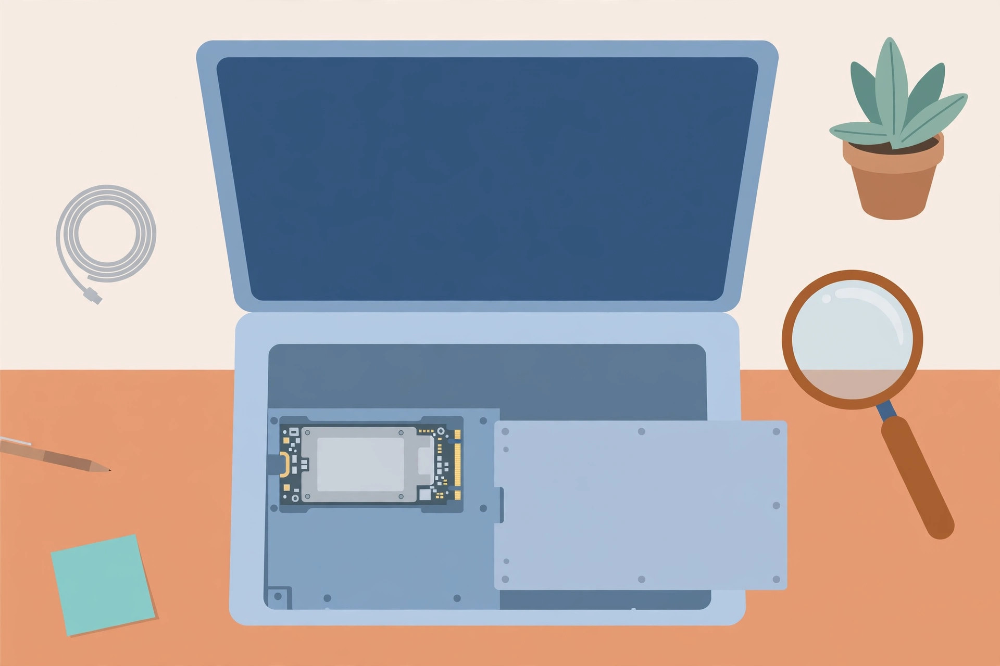

How to Check Drive Health on a Mac: SMART Status, First Aid, and What Each Result Means

A Mac gives you two built-in drive checks, and most short guides treat them as the same thing. They are not. The SMART status is the drive reporting on its own hardware condition. First Aid checks the file system — the formatting and directory structure that organise your files — and tries to repair what it finds there (Engadget; Apple Support). A drive can pass one check and fail the other, and each result calls for a different response. This guide runs both, in the right order, and ends with a decision table for the awkward results: Failing, Not Supported, and errors that keep coming back. One rule runs through all of it, and Apple states it plainly: make sure you have a current backup before you start, in case files are damaged or a check finds errors it cannot repair (Apple Support).
Why a software check matters at all is simple. Older spinning drives often announced trouble out loud — new clicking, grinding, a change in the machine's sound. Modern Mac storage is silent, so the warning has to come from the drive's own monitoring instead of your ears. The signs that prompt a check are unglamorous ones: corrupted or disappearing files, apps that freeze, or a message from macOS that the storage needs servicing (Engadget). Any of those is reason enough to spend fifteen minutes on the two checks below.
Two different checks, not two names for one check
SMART — Self-Monitoring, Analysis and Reporting Technology — is the drive's self-report. Disk Utility surfaces it as a single status line for the physical drive. It answers a hardware question: has the drive flagged a serious problem with itself? First Aid answers a software question: is the file system's structure sound, and can any damage to it be repaired? Engadget's guide puts the limit honestly: First Aid mostly checks the file system itself, and despite its name it does not give the drive a full physical checkup. Run the checks in that order — hardware verdict first, file-system repair second — because a Failing hardware verdict changes what repair is even worth attempting. There is little point polishing the directory structure of a drive that has told you it is dying.
Step 1: read the SMART status
- Open Disk Utility, which lives in Applications > Utilities (Apple Support).
- From the menu bar, choose View > Show All Devices. The sidebar now shows each storage device with its containers and volumes listed underneath it (Apple Support).
- Select the physical drive itself at the top of its group — not a container, and not a volume such as Macintosh HD underneath it.
- Read the SMART status line for that drive, in the drive's information area (the Info view in current versions). Verified means the drive passed its SMART tests; Failing means it has flagged a serious problem; Not Supported means this drive, or the way it is connected, does not offer SMART testing to Disk Utility (Macworld; OSX Daily).
- Write the result down with today's date, even if it says Verified. A dated record turns a future worry into a comparison.
Read Verified with the right amount of confidence: it means the drive has not flagged a serious problem, not that it has promised you years of life (Engadget). Drives can and do fail without a long warning period, which is why the backup comes before the checks rather than after a bad result.
Step 2: run First Aid in Apple's order
- Still in Disk Utility with View > Show All Devices on, start at the bottom of the drive's group: select the last volume listed under the device (Apple Support).
- Click First Aid, then Run. If asked for a password to unlock the disk, enter your administrator password — the one you use to log in to the Mac (Apple Support).
- When that volume finishes, select the next item above it in the sidebar and run First Aid again. Keep moving up: every volume, then each container, then finally the device itself (Apple Support).
- If the First Aid button is dimmed for an item, skip that item and continue with the next one up the list (Apple Support).
- Note the wording of each result as it completes — appears to be OK, has been repaired, or errors found that could not be repaired. The exact wording decides what happens next.
That bottom-up order is not a ritual. Repairing a volume first, then the container that holds it, then the device gives each layer a clean structure underneath it before the layer above is checked — which is why Apple prescribes volumes first, then container, then the drive itself (Apple Support; Engadget).
The startup disk: do it from macOS Recovery
If the drive you are checking is the Mac's startup disk — or the Mac does not start up all the way — Apple directs you to run Disk Utility from macOS Recovery instead of from the running system (Apple Support). The entry steps differ by Mac:
- Apple silicon: shut the Mac down, then press and hold the power button until the system volume and the Options button appear. Select Options, click Continue, then choose Disk Utility from the utilities list (Apple Support).
- Intel: restart, and immediately press and hold Command-R to start from the built-in Recovery system, then choose Disk Utility and click Continue (Apple Support).
- In Recovery's Disk Utility, check the startup volume and its data volume as part of the same bottom-up First Aid run — then work up through the container to the device, exactly as in Step 2.
- When finished, quit Disk Utility and restart the Mac from the Apple menu (Apple Support).
What each result means
| Result | What it is telling you | What to do |
|---|---|---|
| SMART: Verified; First Aid: OK or repaired | No serious hardware flag; the file system is sound or was fixed | Record the date, keep backups current, re-check when symptoms appear or on a regular rhythm |
| SMART: Verified; First Aid errors repeat | The hardware has not flagged itself, but the file-system damage is not staying repaired | Back up first, re-run First Aid from Recovery; if the same errors return, treat the drive as suspect and plan around replacement or service |
| SMART: Failing, or a fatal hardware error message | The drive itself is reporting that it is failing | Back up immediately, in priority order; this is not repairable by Disk Utility — plan on replacing the disk or arranging service (Apple Support guide; OSX Daily) |
| SMART: Not Supported, or no SMART line | No verdict at all — this connection or drive does not report SMART to Disk Utility | Do not read it as healthy. Rely on First Aid plus symptoms, and use a dedicated SMART reader or the drive maker's tools where they can see the drive |
| Device missing from the sidebar | Disk Utility cannot see the device at all | Shut down, unplug nonessential devices and try again; for an external drive, check its cable, connections and power (Apple Support) |
| First Aid: errors it can't repair | Damage beyond what the repair pass can fix | With a verified backup in hand, Apple's next step is to erase (format) the disk and start clean; without a backup, stop and protect the data first (Apple Support) |
One distinction protects people from a common misread: the problems Disk Utility can repair are almost never SMART failures or other hardware problems (OSX Daily). A successful First Aid repair is good news about the file system. It says nothing, one way or the other, about the physical drive — which is exactly why both checks belong in the same routine.
Keep the record where you will find it
Store each dated result — SMART status, the First Aid wording, and any symptom that prompted the check — in one note kept with the computer's other records. A single Verified line means little. The same drive showing Verified in spring, a repaired First Aid result in summer, and repeat errors in autumn is a story with a direction, and it is the story, not any single reading, that should drive a replacement decision. That is the quiet advantage a Mac owner has over the old listen-to-the-drive method: the evidence can be written down.
FAQ
Does First Aid delete files? First Aid checks and repairs file-system structure; the destructive step in this area is Erase, which Apple lists as the follow-on only when Disk Utility finds errors it cannot repair — and only after a backup exists (Apple Support). If a screen says Erase, you have left the checking routine and entered the rebuild routine; stop and confirm the backup first.
SMART says Verified but the Mac still misbehaves. That combination is common and coherent: SMART covers the drive's self-reported hardware condition, while the misbehaviour may live in the file system, which is what First Aid and a Recovery-mode run are for (OSX Daily; Engadget).
How often should this be run? On symptoms, immediately; otherwise as a periodic habit alongside backup checks. The value is in the dated sequence of results, so a steady rhythm beats a single anxious marathon of repeated checks.
What success looks like: a current backup verified before you began, a SMART status read from the physical drive (not a volume) and written down with today's date, a First Aid run completed in the volumes-then-container-then-device order, and — for any result other than a clean pass — the matching row of the decision table already acted on.
Related: SMART basics, explained simply and signs your drive is failing.